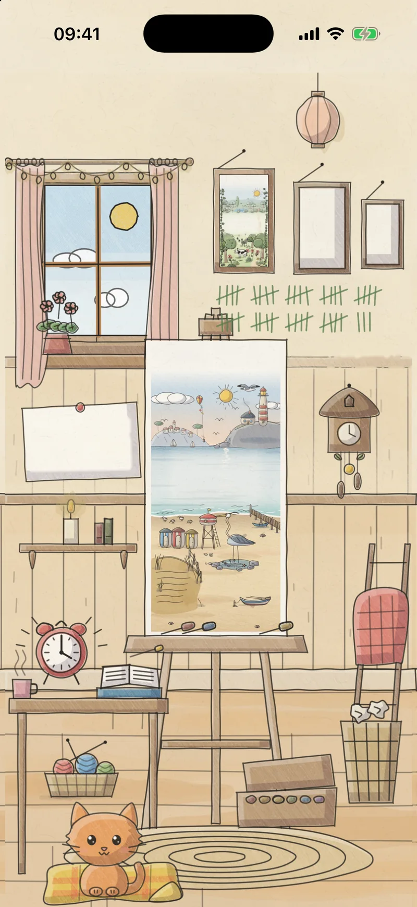

one goal a day.
not a list: just one, the one you've been putting off for too long.


press and hold the circle.
for anyone who keeps putting things off.
for anyone with a long list who never gets started. 1thing has you choose one goal only, a small one, for today.
stop putting things off.
one goal a day is small enough to actually begin.
see what you've done.
every goal you complete stays: in the painting, in the calendar, on your studio wall.
no guilt.
if you skip a day, you lose nothing. the painting waits for you.
a moment of your own, every day.
a calm gesture, a drawing that grows, a companion waiting for you.
a companion lives in your studio.
it waits for you there every day, while you paint.
choose who.
how it works.
choose one goal. just one, for today.
that's how you stop putting things off: one small step at a time.
when you complete it, press and hold the circle.
until it closes. that's your sign it's done.
every goal you complete paints a piece of the picture.
after 30, the painting is finished. if you skip a day, it waits for you.


the painting changes with your day.
the painting takes on the light of the hour you complete your goal.
- dawn

- day

- sunset

- night

your studio.
it's the room you share with your companion. on the wall, a mark for every goal you complete. on the walls, the paintings you've finished.
furnish it your way.
walls, curtains, plants, fairy lights, rugs: more than 40 things.




every day you've done stays.
in the calendar you find the 30 pieces of the painting. tap a day to read the goal again, and the note you left.

all goals
- day 18call grandmaI told her about the trip.
- day 17read ten pages
- day 16go for a runeasier than I thought.
and every day, a little help.
-
on empty days, I'll find the right goal for you.
I know what matters to you: I suggest it, you choose.
-
icon and widgets your way.
eight icons, and your goal on the home screen, inside the painting.
-
one reminder a day.
at the time you choose, in the tone you like.


what shall we paint next?
when a painting is finished, I hang it in your studio and a new one begins.


one goal a day.
for iPhone.